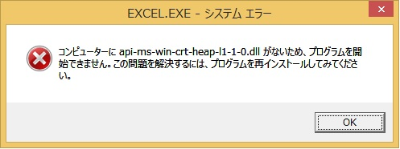

(※ 2018 年 6 月 22 日に Japan Office Support Blog に公開した情報のアーカイブです。)こんにちは、
Office サポート チームです。
本記事では、Office 2016 アプリケーション起動時に「コンピューターに api-ms-win-crt-heap-|1-1-0.dll がないため、プログラムを開始できません。」等のメッセージが表示される現象について案内します。
1 現象
Office 2016 アプリケーションの起動時に、以下のメッセージが表示されることがあります。
(例) Excel 起動時のメッセージ

補足 :
Office 2016 をインストールしている環境で、Office アプリケーション以外で上記メッセージが表示した場合においても、本記事の「対処方法」をお試しください。
dll の名前は他のファイル名で表示される場合もあります。
(例)
“コンピュータにapi-ms-win-crt-runtime-l1-1-0.dllがないため、プログラムを開始できません。この問題を解決するには、プログラムを再インストールしてみてください。”
2 原因
Office 2016 アプリケーションを実行するには、Visual C++ ランタイムのコンポーネントが必要です。
Visual C++ 2015 ランタイムのコンポーネントが足りない場合に、Office アプリケーションの起動などのタイミングで上記エラーが発生することがあります。
なお、Office 2016 はセットアップ時に、Visual C++ ランタイムに関する更新プログラム (KB2999226) を適用するように構成されています。
KB2999226 の更新プログラムを適用するための前提条件を満たしてない等で、KB2999226 の適用が失敗している可能性があります。
3 対処方法
以下のいずれかの方法で、KB2999226 の更新プログラムを適用します。
方法1. Windows Update
Windows Update で検出される最新の更新プログラムを適用して、KB2999226 の更新プログラムを適用します。
方法2. Microsoft ダウンロードセンターから Windows 更新プログラムをダウンロードしてインストールする
KB2999226 の更新プログラムを Microsoft ダウンロードセンターからダウンロードし、適用します。
KB2999226 の更新プログラムは、Windows OS のバージョンやアーキテクチャに合わせてリリースされています。
以下のサポート技術情報に記載されているリンクから、現象が発生しているPC 端末に合わせた更新プログラムをダウンロードしてください。
2999226 Windows での汎用の C ランタイムの更新プログラム
補足:
Windows 8.1 または Windows Server 2012 R2 では、KB2999226 の適用前提条件として、次の Windows 更新プログラムが適用されている必要があります。
1．KB2919442
2919442 March 2014 servicing stack update for Windows 8.1 and Windows Server 2012 R2
2．KB2919355
2919355 Windows RT 8.1, Windows 8.1, and Windows Server 2012 R2 update: April 2014
インストールされていない場合は、次の順序でこれらの更新を適用してください。
1 番目 : KB2919442
2 番目 : KB2919355
(上記適用後に、KB2999226 をインストールします)
注意点 :
- ダウンロード時に、KB2919355 だけでなく clearcompressionflag.exe にもチェックを入れてダウンロードしてください。
ダウンロード後は、KB2919355 のインストール前に clearcompressionflag.exe を実行してください。 - KB2919355 が適用できない場合は、以下の KB3021910 を適用後に再度お試しください。
3021910 April 2015 servicing stack update for Windows 8.1 and Windows Server 2012 R2
※ 本情報の内容 (添付文書、リンク先などを含む) は、作成日時点でのものであり、予告なく変更される場合があります。